| Problema 304. Dado el rectángulo ABCD, con a=AB (base) y b=BC (altura), a>b, desde la base AB se construye internamente el triángulo equilátero ABX, y desde la altura, b=BC, se construye exteriormente un triángulo equilátero BCY. Las rectas AX y BY se cortan en Z. Se pide: a) Hallar la relación entre la base y la altura del rectángulo para que los puntos X, C e Y, estén alineados. b) Caracterizar y calcular en este caso todos los elementos significativos: lados, ángulos, medianas, bisectrices interiores y exteriores, radio inscrito y radio circunscrito del triángulo XYZ. Romero, JB. (2006). Comunicación personal. Solución de José María Pedret, Ingeniero Naval. Esplugues de Llobregat (Barcelona). (16 de marzo de 2006) |
|
| APARTADO (a) |
| CONDICIONES DEL ENUNCIADO 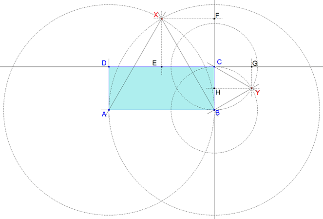 figura 1 Si X, C, Y estuvieran alineados, los triángulos CFX y CHY serían homotéticos con centro de homotecia en C. Ya que tendrían dos lados paralelos y el tercero, por C, en prolongación. Expresando la razón de la homotecia
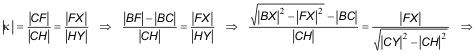 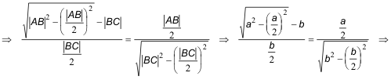 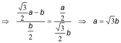 que es la condición buscada. Además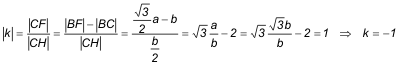 Y como C es el centro de homotecia y la razón es κ = -1 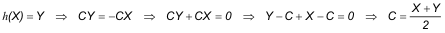 deducimos que¡¡¡ C ES EL PUNTO MEDIO DE XY !!! COMPROBACIÓN CON CABRI II 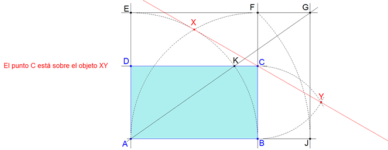 figura 2 1 Trazamos la recta AB y una perpendicular por A. 2 Con centro en A arco de radio AB que corta en E a la perpendicular anterior. 3 La paralela por E a AB y la paralela por B a AE se cortan en F. 4 Con centro en A arco de radio AF que corta a AB en J. 5 Por J perpendicular a AB que corta a EF en G. 6 La recta EF corta al arco BE en K. 7 Por K, paralela a AB que corta a AE en D y a BF en C. Hecha la construcción vemos que: 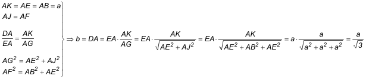 |
| APARTADO (b) |
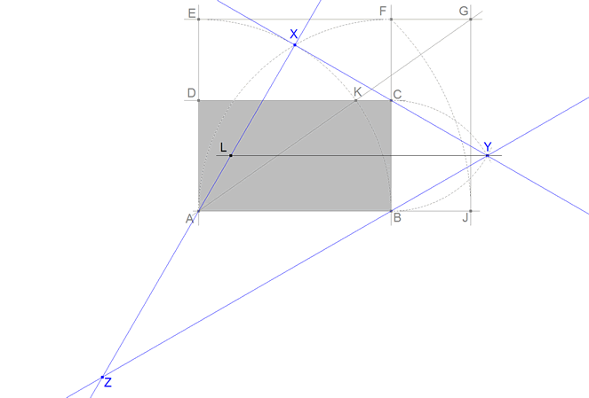 figura 3 ÁNGULOS Como los triángulos construídos son equiláteros, sus lados serán respectivamente a y b y sus ángulos serán todos 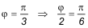 Para ayudarnos, trazamos por Y una paralela a AB que corta a AX en L 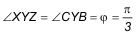 lo que nos lleva a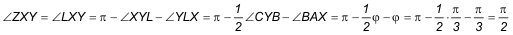 Lo que nos dice que XYZ ES RECTÁNGULO EN X, y entonces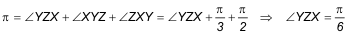 LADOS 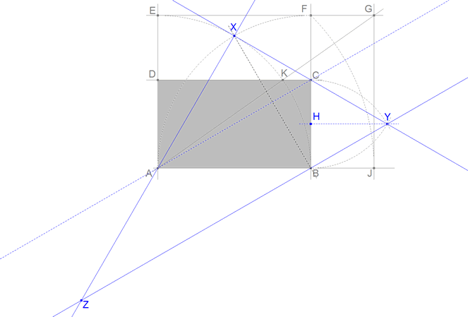 figura 4 Gracias a que C es el punto medio de XY 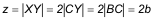 Comparemos ahora los triángulos ADC y BHY 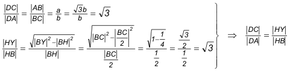 Lo que significa que los triángulos ADC y BHY son semejantes; pero los lados AD y DC son respectivamente paralelos a BH y HY, entonces los terceros lados AC y BY son paralelos; lo que nos lleva a que ¡¡¡ AC y ZY SON PARALELAS !!! Por lo que podemos escribir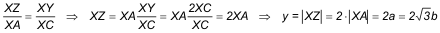 Y como sabemos que XYZ es rectángulo en X 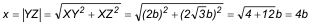 MEDIANAS A partir de la figura, y aprovechando que el triángulo es rectángulo, podríamos determinar las medianas; pero haremos el cálculo a partir de las fórmulas generales siguientes 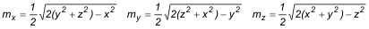 y sustituyendo x, y, z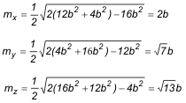 BISECTRICES INTERIORES En este caso las fórmulas generales son 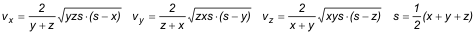 y sustituyendo x, y, z 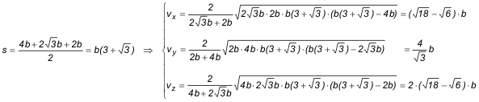 BISECTRICES EXTERIORES Las fórmulas generales son 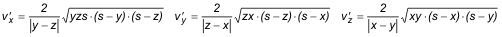 y sustituyendo x, y, z 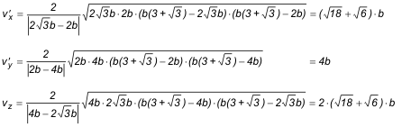 ALTURAS Para las alturas escribimos 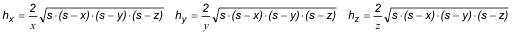 Calcularemos primero 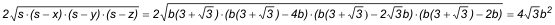 y ahora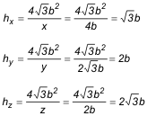 RADIO INSCRITO 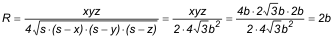 RADIO CIRCUNSCRITO 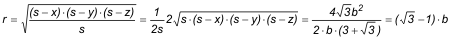 |